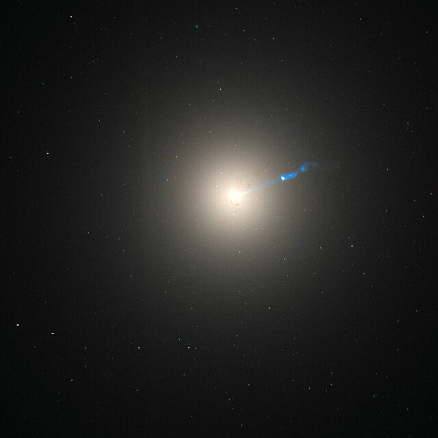

Galaxia con forma de elipse. Pueden ser nombradas desde E0 hasta E7, donde el número significa lo ovalada que es la galaxia; así, E0 sería una forma de esfera y E7 de plato o disco. También se puede decir que el número indica su excentricidad multiplicada por 10.

Su apariencia muestra escasa estructura y, típicamente, tienen relativamente poca materia interestelar. En consecuencia, estas galaxias también tienen un escaso número de cúmulos abiertos, y la tasa de formación de estrellas es baja. Por el contrario, estas galaxias están dominadas por estrellas viejas, de larga evolución, que orbitan en torno al núcleo en direcciones aleatorias. En este sentido, tienen cierto parecido a los cúmulos globulares.
Las galaxias más grandes son gigantes elípticas. Se cree que la mayoría de las galaxias elípticas son el resultado de la colisión y fusión de galaxias. Estas pueden alcanzar tamaños enormes y con frecuencia se las encuentra en conglomerados mayores de galaxias, cerca del núcleo.